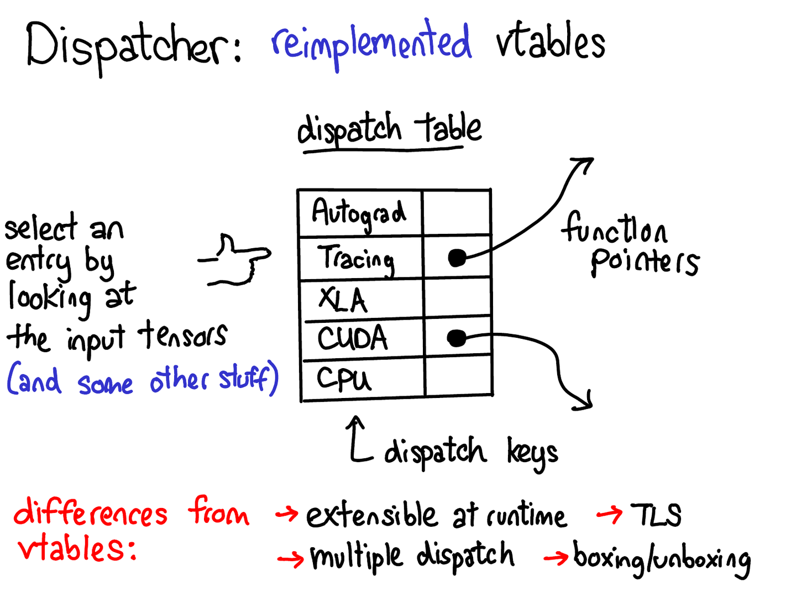

Pytorch源码理解
代码生成
Pytorch对函数进行debug，大部分会跳转到torch/_C/_VariableFunctions.pyi中。但是在Pytorch源码中仅有torch/_C/_VariableFunctions.pyi.in文件。在torch/_C/_VariableFunctions.pyi文件首行有
1 | # @generated from torch/_C/_VariableFunctions.pyi.in |
pyi文件中的i指interface。
pyi implements "stub" file (definition from Martin Fowler)
Stubs: provide canned answers to calls made during the test, usually not responding at all to anything outside what's programmed in for the test.
Pytorch中的代码生成分为两步：
- 由py生成pyi.in
- 由pyi.in生成pyi
在Pytorch源码中由以下pyi.in文件：
- torch/_C/_init_.pyi.in
- torch/_C/_nn.pyi.in
- _torch/_C/return_types.pyi.in
- torch/_C/_VariableFunctions.pyi.in
- torch/nn/functional.pyi.in
- torch/utils/data/datapipes/datapipe.pyi.in
这些文件实际上也是通过stubgen生成得到。在torch/CMakeLists.txt中有
1 | #新增文件名为torch_python_stubs的custom target，以来以下pyi文件。target和command命令搭配使用，此时用法是target依赖于command的输出（OUTPUT） |
疑问：torch/_C/_nn.pyi和torch/_C/return_types.pyi也是由tools/pyi/gen_pyi.py生成的，为什么没有在add_custom_target和add_custom_command的DEPENDS和OUTPUT中?
之后，新增一个torch_python的shared
library，运行后生成build/lib/libtorch_python.so，接着说明torch_python依赖于torch_python_stubs
1 | add_library(torch_python SHARED ${TORCH_PYTHON_SRCS}) |
在非MacOS的系统上都会建构一个名為nnapi_backend的library，它的依赖中就有torch_python。
1 | # Skip building this library under MacOS, since it is currently failing to build on Mac |
总结一下，就是有nnapi_backend -> torch_python -> torch_python_stubs -> torch/_C/_init_.pyi, torch/_C/_VariableFunctions.pyi, torch/nn/functional.pyi间的层层依赖，所以要建构nnapi_backend这个library时才会调用tools/pyi/gen_pyi.py去生成.pyi档。
gen_pyi.py中主函数如下：
1 | def main() -> None: |
其关键在于gen_pyi函数
1 | def gen_pyi( |
以rand函数为例，在native_functions.yaml中，有以下6个override
name，分别为names, generator_with_names,
空字串, generator, out,
generator_out。可以发现names和generator_with_names有autogen，分别有name_out和generator_with_names_out另两个out版本函数，因此native_functions.yaml里的6个rand相关函数最终对应_VariableFunctions.pyi中的8个rand函数
1 | - func: rand.names(SymInt[] size, *, Dimname[]? names, ScalarType? dtype=None, Layout? layout=None, Device? device=None, bool? pin_memory=None) -> Tensor |
1 | @overload |
在gen_pyi.py中，继续经过load_signatures和get_py_torch_functions函数，对于rand函数例子而言，依据有没有out被整理成两两一对，共四对：第一对是generator_with_names和generator_with_names_out第二对是generator和generator_out。第三对是names和names_out。第四对是空字串和out。分别对应_VariableFunctions.pyi中有generator及names参数，只有generator参数，只有name参数，沒有generator和names参数。
Dispatch机制
什么是Dispatch
